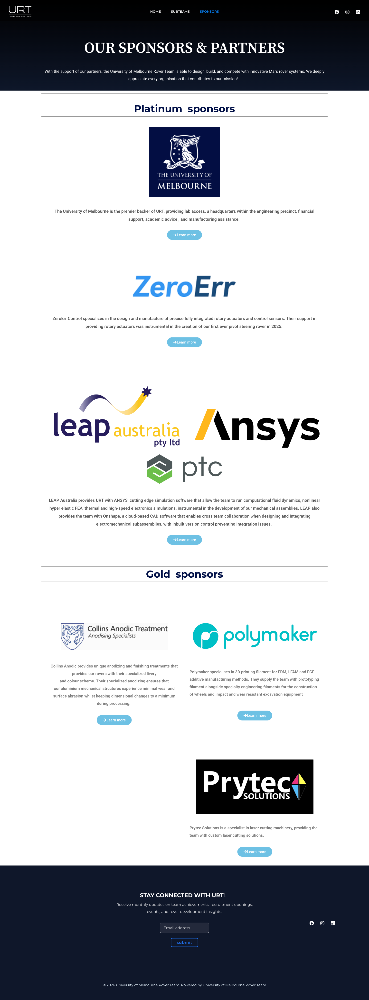
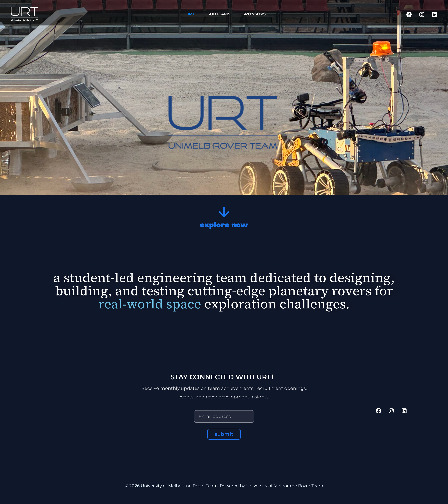

01
Team & Projects
Showcase the team's identity and engineering work.


UNIMELB ROVER TEAM
URT Website
Designing and building a digital home for the Unimelb Rover Team.
I designed and developed a website to showcase the team's work, communicate sponsorship information, and support future content updates.
The team needed a central platform for project updates, sponsorship information, and team introductions. The website also had to be affordable, easy to maintain, and flexible enough for future updates.
01
Showcase the team's identity and engineering work.
02
Present partners and collaboration information.
03
Help students understand the team and its subteams.
THE DESIGN CHALLENGE
I worked with team leads to clarify content requirements, define the visual direction, and translate the design into a functional website.
01
Identify key audiences, content needs, and technical constraints.
02
Structure website content and establish a consistent visual direction.
03
Implement pages in WordPress and refine them through stakeholder feedback.


WHAT I LEARNED
This project taught me how to balance visual design, technical feasibility, and maintainability. Working directly with stakeholders also strengthened my ability to translate changing requirements into a functional website.